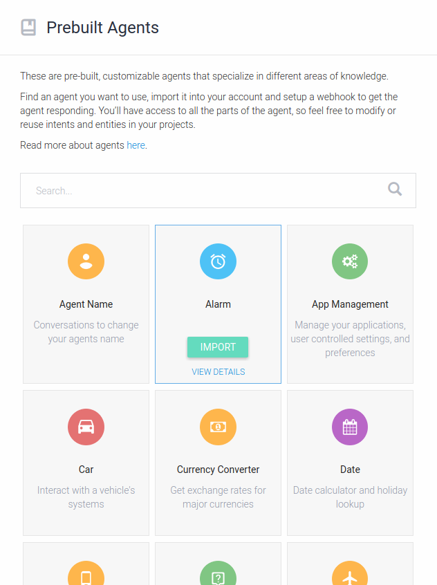

As 2017 wraps up, I want to look forward to some opportunities for the future in voice tech and conversational AI. These are technologies that developers of voice agents and skills don’t have that still remain to be built. Believe it or not, your home’s smart speaker isn’t the smartest, most capable member of your family. Yet. 😁
Ultimately, what the voice agents that you interact with can do is determined by the capabilities that developers in this field have access to. So in this post, I’m going to take the perspective of a developer working on building conversational intelligent agents. I want to hypothesize about what technologies remain to be developed or at least widely applied. Most of the excitement in this area has come out of the rapid adoption of smart speakers, so I’m going to focus a fair bit on the specifics of vocal computing technology specifically.
My goal is just to identify a few of the pieces between where we are today and the day when everyone has a J.A.R.V.I.S.
The opportunities in this section are applicable to conversational interfaces, whether those interfaces are voice or text.
One of the best parts of being a developer now as opposed to, say, 20 years ago is that we all share our toys so much better than we used to. Between powerful cloud APIs and the world of open source on GitHub, the average developer today has access to huge amounts of powerful technology that can be composed very rapidly. In the world of conversational agents, it’s amazing how quickly developers can hack up a quick chatbot that can hold a simple conversation, send text messages, order you a car, and so on.
Thanks to the excitement around voice-based agents introduced by smart speakers, a lot more developers are working on building conversational interfaces than ever before. However, there aren’t a lot of good examples of building blocks that can be used to build up the basics needed to create a conversational agent.
The best example of what I’d like to have is DialogFlow’s concept of Prebuilt Agents. They are reusable conversational skills, but they’re constrained for use within DialogFlow specifically.
What I’d really like is a generic module that can be used to talk about the weather across a wide range of runtimes. Since I don’t have time to build such a thing, I’m probably going to suggest this idea to my friends at Jovo. Having conversational skills as something like Node modules that could just be plugged into an open source, cross platform framework like Jovo would go a long way towards making developing for voice more like UI development for other platforms.
Speaking of missing tools for voice agent development, there’s another big class of functionality that I find missing for voice.